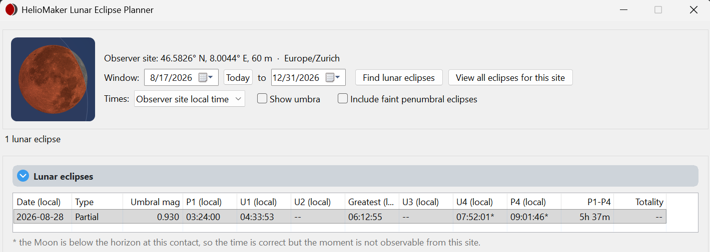
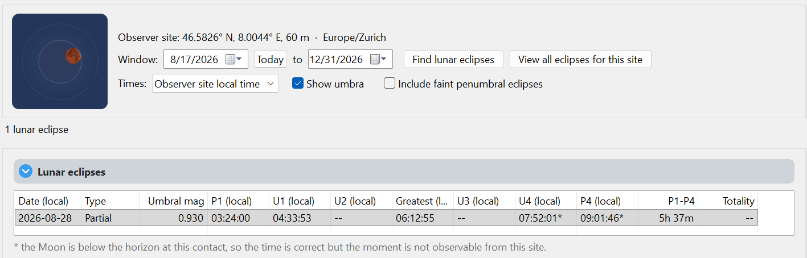
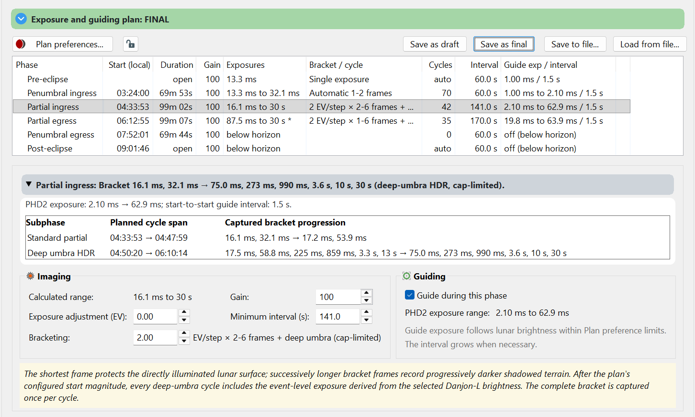

Planner basics
Find an event, inspect its geometry and save a plan for rehearsal and live imaging.
Search for an eclipse
- Open Tools ▸ Lunar Eclipse Planner or press
Ctrl+Shift+L. - Check the observer site. Set the start and end dates in Window:; Today resets the start date.
- Click Find lunar eclipses and select a result. Use a past date window to practise with a historical event.
- Select UTC or observer-site local time using Times:. Read the displayed date as well as the time when an event crosses midnight.

Include faint penumbral eclipses adds the faint penumbral events hidden by default. View all eclipses for this site opens timeanddate.com’s eclipse list for the observer coordinates in your browser; that optional lookup needs an internet connection. The contact columns are P1, U1, U2, Greatest, U3, U4 and P4, followed by overall P1–P4 duration and totality duration.
Inspect the preview and phase plan
Use the timeline to explore the event. With Show umbra checked, Earth’s shadow stays still while the Moon moves through it. Uncheck it to hold the Moon still and see the shadow cross the lunar disk.

The plan table shows phase start and duration, gain, exposure range, bracket/cycle details, cycle count, interval and guide exposure/interval. Select a phase to read its summary and edit its settings. Review any below-horizon or unavailable portions before approving the plan.

Save and protect the plan
| Control | Purpose |
|---|---|
| Save as draft | Save work in progress. A rehearsal can use a draft. |
| Save as final | Approve and save the reviewed settings for a live eclipse run. |
| Save to file... | Export plan settings to a portable JSON file. |
| Load from file... | Replace the working settings with those in a saved JSON file; review before approving. |
| Padlock button | Protect the plan against accidental edits. While locked, preferences, phase edits, draft/final saves and loading are disabled; export remains available. |
A new search, or a change to the date window or filters, keeps the plan you are editing, with its unsaved changes, even when its eclipse is not among the new results. Selecting another eclipse, or closing the planner, asks whether to save them first.
A draft may exist alongside a saved final plan. Confirm which version preflight will run. A portable settings file does not replace camera testing or checking the observing site.
Use Eclipse plan rehearsal... for a simulated event, or Start eclipse imaging to open preflight for the real event.